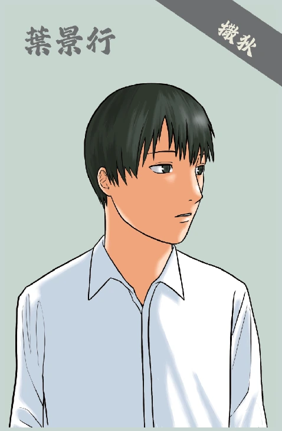

撒狄－－實在

「班上有基督徒的同學嗎？」
噢不！我就知道。每次課堂中提到基督教相關議題，老師總會順帶一問。我猶豫地半舉起手，承受四周投射而來的好奇目光。
「你是基督徒啊？」同桌詫異地問。他果然看不出來對吧！也罷，隨著年齡漸長，內心難以言喻的迷茫也日益增長，而我無力抵抗。如果我什麼也不說，大家能從人山人海中，辨認出身為基督徒的我嗎？每週走進教會坐下，心卻未曾安然坐下，所謂有名無實，說的就是我吧！腦袋亂哄哄地，我閉起眼睛用力搖了搖頭，想把煩躁甩掉。一陣銀白交雜碰撞，暈眩感從腦袋蔓延開來……
這是哪裡？我為什麼會出現在這座山上？看起來，只有一條道路能到達這裡。遠處似乎有幾個聚落，都是全然陌生的模樣。整座城市有些大型建築，豎立著雕刻精美的石柱，既莊嚴又磅礡，想必是富饒的區域呢。
「你是第一次來到這裡吧？」低沉的聲音將我的目光拉了回來，是一位身穿白衣的老人。雖然完全不清楚現在的情況，至少我還能聽懂他說的話，也許可以得到一些資訊。
一陣靜默，我不語，只是凝視。在他的瞳孔裡，有我讀不出的複雜情緒，像是憂慮、卻仍有堅定。似乎也沒有惡意。
「這是撒狄，一個被神眷顧的地方。感謝主！祂賜給我們豐饒的土地，附近的河流還有沙金，靠著這些沙金，錢的問題都不用煩惱了。感謝主！在這座山上生活，我們不用費心煩惱戰爭的問題。想攻打撒狄可不容易呢」見我沉默，他自顧自地說。
聽起來又是個被上帝祝福，而且對信仰堅定熱衷的基督徒呢！每次聽見這些「見證分享」，心裡總是五味雜陳。我擠出勉強的笑容，向他點了點頭，盡量不讓他看出我的迷惘。
老人頓了頓，開口邀請我參觀他們教堂的聚會。他領我穿過撒狄的街道，得以仔細看清這座城市的面貌。遠處幾個聚落圍繞著撒狄，無論要貿易、外出，應該都會經過這裡。兩旁一座座宏偉的建築、一個個石桌、石獅雕像，要打造出這樣的氣派需要多少歲月啊？我在心中想著。走著走著，一座氣派的屋宇出現在視野之中，竟然是一間華美的教堂。
我與老人在角落的位置坐下，與他們一同敬拜、唱詩，低頭諦聽台上主領的勸勉話語。相隔著遙遠的時間與空間，主日的屬靈竟然奇蹟似的相同。置身其中，聽見此起彼落的回應與禱告，彷彿都要被他們的火熱所感動。
聚會結束，在教堂稍作休息後，老人又邀請我逛逛他口中富裕的撒狄。走在商店街，商販們熱情吆喝，其中有張熟悉的面孔，竟是教會中的弟兄！為何他看起來面露不悅呢？我豎起耳朵試圖聽清，那名顧客口中說著貴、說其他攤販未曾喊出如此不合理的價格。而商販不屑搖手，朝著顧客遠去的背影咒罵幾句，憤恨的目光彷彿要將所有不悅道盡，有些不堪。而老人帶著擔憂低頭為他們祈禱，動作間有種熟練。如果沒有在教會遇見，我能看出他是一名基督徒嗎？雖然已在教會遇見，卻也無法將判若兩人的面貌相連結。不禁懷疑起方才看見他們屬靈的虔誠模樣，會不會是一場夢境。就像我辨認不出這些基督徒，同學們也辨認不出我，我能怎麼辦呢？
轉眼也到了傍晚時分，土地上的一切都彷彿披上了一層單薄的金裝，在夕陽下閃著昏暗又明亮的光芒，而迎上夕陽的背後，則是被拉長了的冗長的影子。遠處有一個身影正在跑近，來不及看清他手中拿著什麼，只見他向我們的反方向飛奔。老人突然皺起眉，略有憂色表示要立刻回教會看看。所以……那是與教會有關的事對吧！猛然意識到的我快步跟上老人趕往教會。
「……所以要回想你是怎樣領受、怎樣聽見的、又要遵守，並要悔改。若不儆醒，我必臨到你那裡，如同賊一樣。我幾時臨到，你也決不能知道。」[1]
其中一人大聲讀出信件內容，在我腦中迴盪起震耳欲聾的共鳴。關於我和神、關於信仰、關於我不願直視的那些，能逃避到何時呢？我湊近聆聽。
「其實，主以前也大大使用撒狄的人們，可是現在好多基督徒不再依靠神，而是依靠金錢、勢力，我們能怎麼辦呢？」有人小聲嘀咕。
「然而在撒狄，你還有幾名是未曾污穢自己衣服的，他們要穿白衣與我同行，因為他們是配得過的。凡得勝的必這樣穿白衣，我也必不從生命冊上塗抹他的名；且要在我父面前，和我父眾使者面前，認他的名。」[2]
我躲在安逸的生活裡好久好久了。蒙著眼睛生活的日子，其實我一直感受不到安定與自由。講著屬靈的話語，卻不能真正活出屬靈的生命；看似常常聽講道，卻不能行道。慚愧之意慢慢浮起。
腦中回想起同學的疑問：「你是基督徒啊？」作為基督徒，一生總要聽過數次這樣的問題吧。但下次聽見時，希望會是一種驚訝的讚嘆。與主同行，沿途會遇見怎樣的風景呢？儘管未知，卻如此可期。
任務：保護老約翰，在羅馬政府的壓迫中，仍然持守真理、興旺福音。
註解：
[1] 啟示錄 3:3
[2] 啟示錄 3:4~5